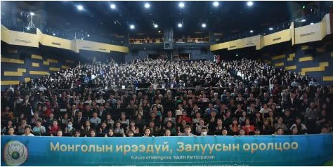

Залуучуудын харилцаа, хандлагыг сайжруулан, чадавхжуулах нь эргээд нийгэмд асар том эерэг өөрчлөлтийг бий болгодог. Иймээс бид нийгэмд илэрч гардаг асуудлуудын хүрээнд бие сэтгэлийн эрүүл мэндийг хангах, хувь хүний хөгжлийг төлөвшүүлэх, даяарчлагдсан нийгэмд хэрхэн дэлхийн иргэн болж зөрчилдөөнгүйгээр зэрэгцэн амьдрах зэрэг өргөн агуулгаар ЮНЕСКО-гийн “Насан туршийн боловсрол”-ын зорилгыг хэрэгжүүлэхэд хувь нэмрээ оруулж, Тогтвортой хөгжлийн 4 дэх зорилго болох чанартай боловсролыг дэмжихийн төлөө танхим болон цахим хэлбэрээр сургалтыг явуулж байна.
ХИЧЭЭЛИЙН СЭДВҮҮД:
- Сайн дурын ажил гэж юу вэ?
- Нийгмийн хөгжилд иргэдийн оролцоо
- Өв уламжлалaa тээсэн залуу манлайлагчид байх нь
- Соёлын ялгаатай байдал ба тэдгээрийг ойлгож, хүндэтгэх нь
- Залуучуудын сэтгэл зүй
Хүлээгдэж буй үр дүн:
Залуучууд академик боловсролоос гадна бодит амьдрал нийгмийн харилцаан дээр үүсдэг асуудлууд хэрхэн хандах талаар мэдлэгтэй болж өөрийнхөө болон бусдын нийгмийн эрүүл мэндэд санаа тавьдаг төлөвшсөн иргэн болох.
Сурагчдын сэтгэгдлүүдэс:
оролцогч
“Мэдээжийн хэрэг би эхэндээ эргэлзэж байсан ч одоо ирээдүйд хэрэгтэй зүйл гэдэгт итгэж байна.”
“Би туслахдаа ихээхэн сэтгэл хангалуун байсан.”
оролцогч
“Гэхдээ 2 хичээлийн дараа би ядаж өөрийн хүрээлэлдээ жижиг ч гэсэн өөрчлөлт хийж чадах юм шиг санагдаж байна.”
“Бид улсыхаа хөгжлийг гоочилж, дандаа болохгүй талаас нь хардаг ч өөрчлөлт гэж алхам хийдэггүй юм байна гэсэн бодол төрлөө.”
оролцогч
“Өв уламжлал гэдэг нь зүгээр нэг өнгөрсөн үе биш, харин бидний өнөөдөр, ирээдүйтэй холбоотой амьд үнэт зүйл юм байна гэж бодогдлоо.”
“Бид бол ирээдүйн өв соёлыг дамжуулах гүүр юм. Үр хойчдоо өв соёлоо сайн дамжуулах хэрэгтэй гэдгийг ойлголоо.”
оролцогч
“Аливаа улс үндэстэн ба шашин шүтлэг нь маш олон соёлыг өөртөө шингээж байдаг юм байна. Тэдгээр шашин бүр өөрийн гэсэн хэв маягтай. Харин бид ижил тэгш хүндэтгэлтэй хандах ёстой гэдгийг ойлголоо.”
“Ингэж долоо хоног болгон хичээлдээ суух болгондоо бага багаар мэдлэг хуримтлуулж, өөрийгөө ямар чухал, үнэ цэнтэй сургалтад сууж байгаагаа ухаарч байна шүү.”
оролцогч
“Өнөөдрийн хичээл надад үнэхээр сэтгэл хөдөлгөм байлаа. Уйлуулсан, ухааруулсан, өөрийн минь үнэ цэнийг мэдрүүлсэн маш чухал хичээл боллоо.”
“Уучлал гэдэг нь маш том зүйл гэдгийг ойлгосон. Өөрийнхөө мэдрэмжийг тодорхойлж, өөрийн мэдрэмжээ сайн илэрхийлж ярилцах ёстойг ойлгосон.”